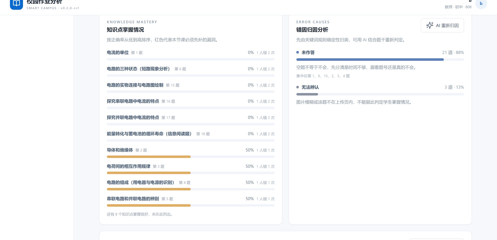
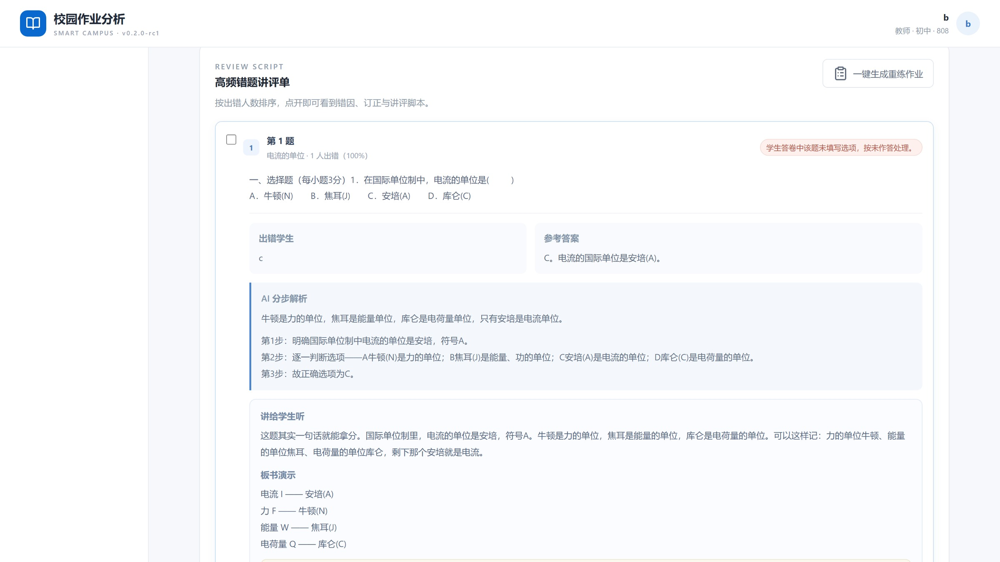
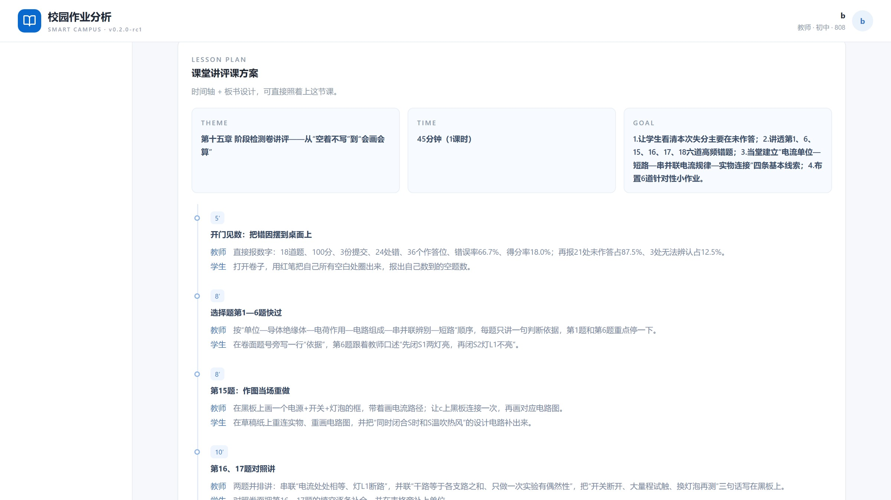

2026 Meisha Youth Hackathon Invitational · MES HACKATHON
Turn every grading session into the next lesson
v0.2.0-rc1 · Team B3 · MIT License · Data stays on school premises
The problem
A teacher faces far more
than just 'finishing the grading.'
Annotating each question, writing comments, recording scores. Whole blocks of time get fragmented — one class takes an entire evening.
Class error rates, knowledge mastery, error cause distribution — to see clearly, you have to count question by question.
The next day in class, you can usually only address 'the ones that felt like most students got wrong.'
Result: the part that exhausts teachers the most is precisely the part most easily wasted.
The insight
The mistake notebook holds the class's most authentic learning evidence, yet no one has time to translate it into 'what to teach next class, who needs remediation.'
So what's truly missing isn't a faster grading tool —
it's a translator that turns grading results into
teachable content.
The product
Photo upload → AI page-by-page recognition & grading → Teacher review → Auto-generated class insights, knowledge mastery rates, error cause attribution, and ready-to-use review lesson plans.
Open it now, use it now.
How it works
Every step has a human confirmation checkpoint.
Automation handles speed; teachers handle judgment.
AI teaching analysis · New in v0.2.0
Not a longer report —
something you can bring into the classroom the next day.
Design principle
All computed from teacher-reviewed data.
The last rule prevents penalizing students for poor scan quality.
Only transcribes and suggests; never generates facts.
The cost of an error is 'a different phrasing,' not 'a wrong number.'
In short: let the model do what it's good at — expression; let the code do what it's good at — arithmetic.
Knowledge mastery & error causes
18 knowledge points sorted by accuracy rate low to high; error causes strictly classified by question number, 12 built-in rule categories, percentages always sum to 100%.

Review script
Sorted by number of students who missed it, starting with the most critical.
Expand to see affected students, reference answers, AI step-by-step solutions, and a review script you can read aloud.
Every high-frequency mistake includes


Lesson plan & differentiation
Theme, duration, objectives, timeline (what to teach / what the teacher does / what students do), and ready-to-copy board design.
Each error cause comes with a 5-minute actionable classroom activity and a named list for tiered support.
The student side
Only teacher-confirmed mistakes enter the student notebook; knowledge points marked as passed once all answered correctly.
Real data · Middle School Physics · Chapter 15 Stage Assessment
AI Teaching Conclusion · Original Excerpt
"This Chapter 15 stage assessment had only 1 student (c) who submitted 2 times, totaling 3 records, 18 questions with 24 mistakes across 36 answer positions at 66.7% error rate, scoring only 18.0%. Most critically, 21 of the 24 mistakes were [Unanswered] (87.5%)... Points were lost mainly because students "didn't attempt" rather than "didn't know.""
Engineering
Open-source MIT, locally deployable, data stays on campus.
github.com/turtlelnc/MES-Homework · v0.2.0-rc1
Open source & stack
MIT License, code on GitHub,
one command to run it yourself.
Source code, data formats, and statistical methods all public.
github.com/turtlelnc/
MES-Homework
No unnecessary dependencies for show — every layer independently replaceable.
Frontend
React 19 · TypeScript strict mode · Vite 6 · Recharts
Server & Data
Express 5 · SQLite (WAL) · Multer upload type and size validation
Documents & Recognition
PDF.js · mammoth · word-extractor · @napi-rs/canvas server-side image conversion · vision model OCR
Models & Security
10 provider presets · OpenAI-compatible vision format · API Key encrypted server-side with AES-256-GCM · scrypt password hashing
Testing & Delivery · Vitest unit tests · node:test end-to-end verification · Cloudflare Worker static hosting & API proxy
What's next
Next steps: admin approval for teacher onboarding, email verification and password recovery, login rate limiting, and recognition rate evaluation against real school samples.
Smart Campus Homework Analyzer
github.com/turtlelnc/MES-Homework · MIT License · v0.2.0-rc1
Team B3
2026 Meisha Youth Hackathon Invitational